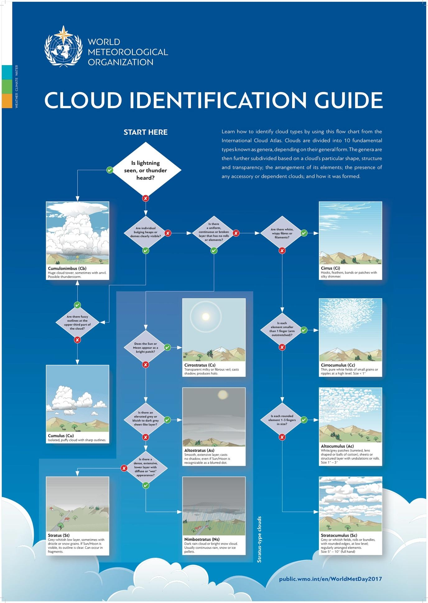
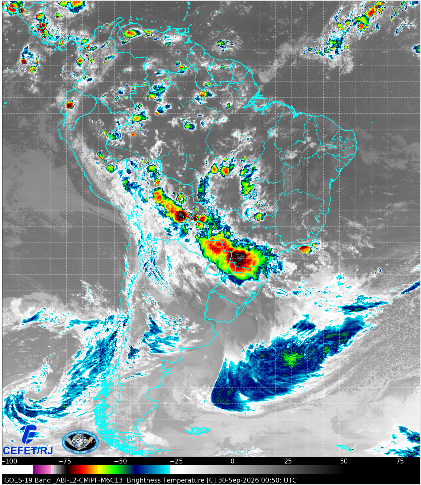
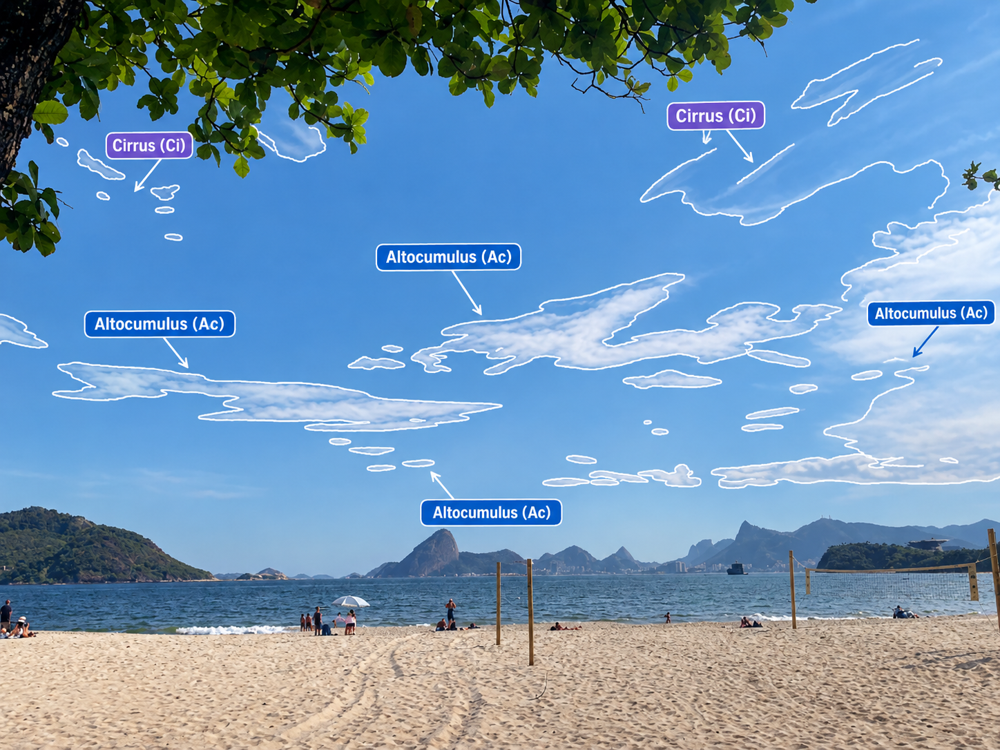
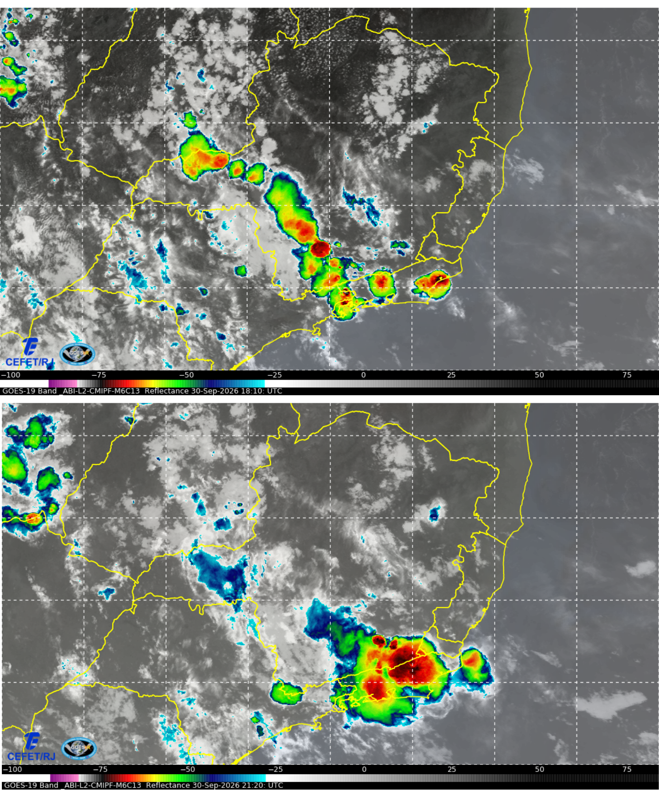
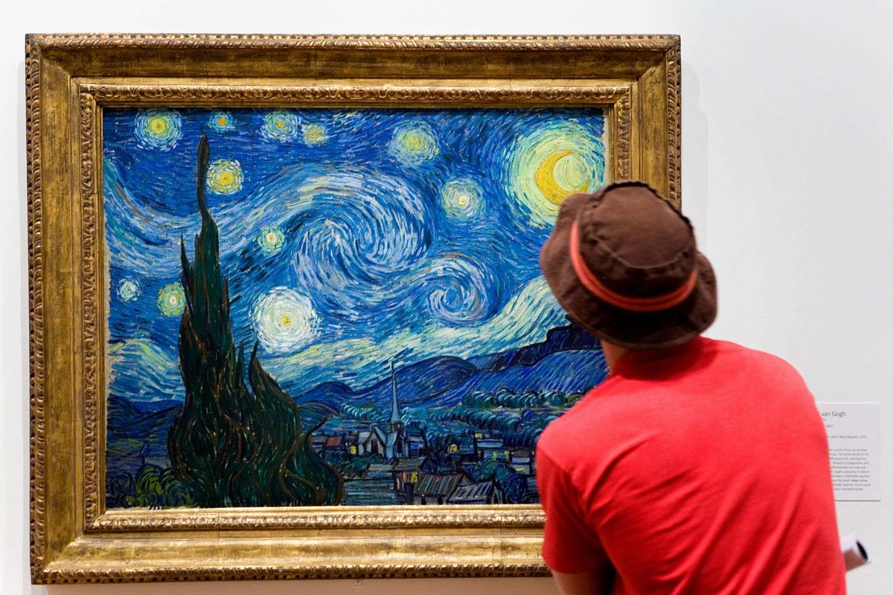
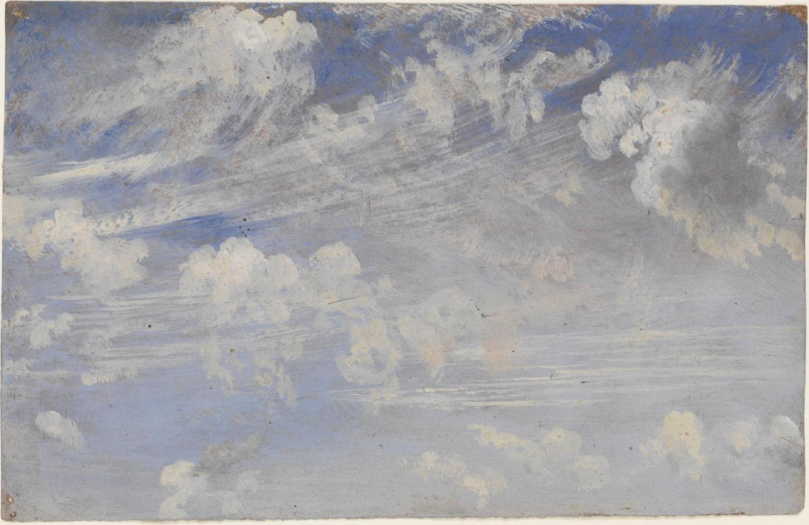
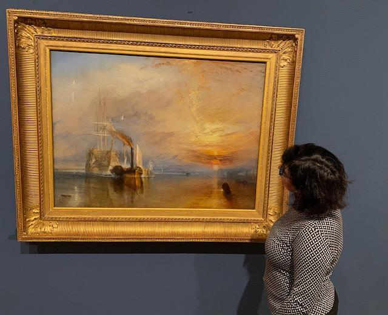
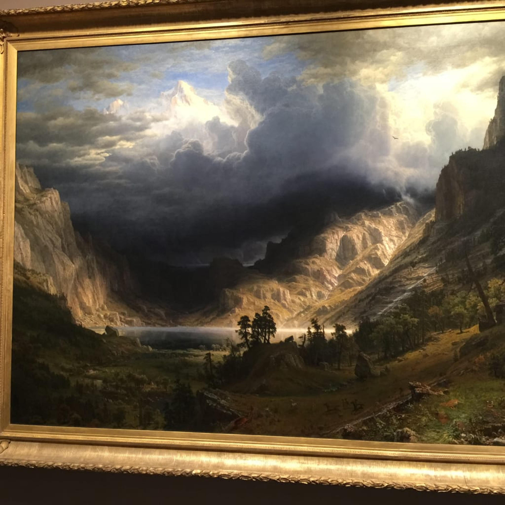
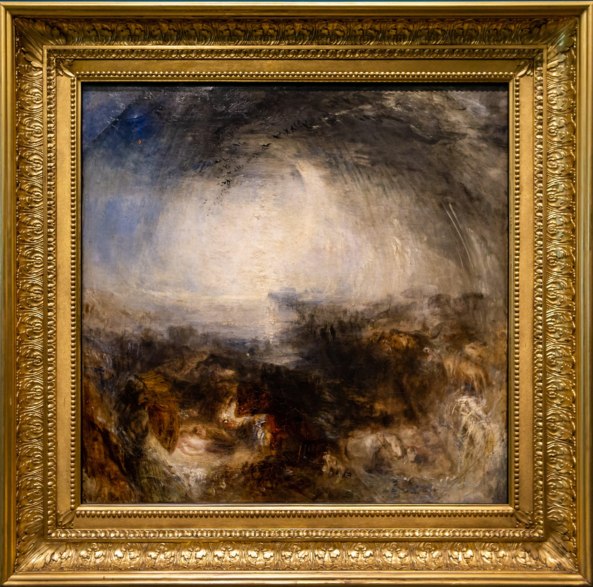
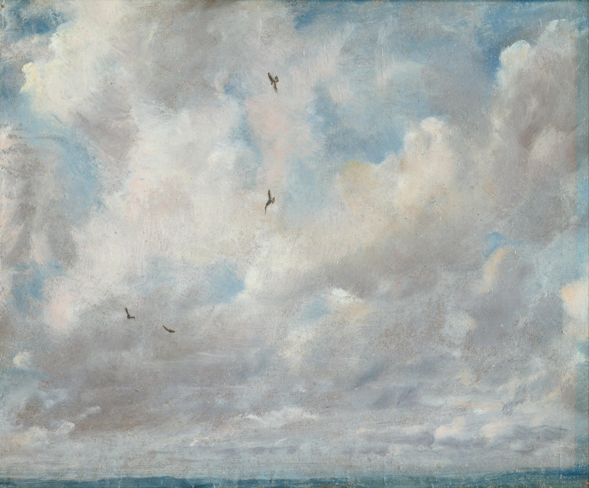

A Noite Estrelada
Vincent van Gogh — 1889
O que você identifica no céu?
Uma cartografia de contrainformação sobre a dinâmica de nuvens e previsão do tempo por Lorena Sttellet
Registro fotográfico realizado na Praia de Icaraí para observar a dinâmica das nuvens. Ao contornar ao vivo a morfologia das formações de altitude, isolou-se a assinatura visual que sucedeu a precipitação do dia 30/09 no litoral fluminense.
A informação meteorológica oficial costuma ser reduzida a porcentagens abstratas em aplicativos. A transformação material utiliza este site para traduzir o conhecimento técnico em uma ferramenta de leitura direta do território e do céu pelo cidadão.
Antes de interpretar as formações observadas no céu de Icaraí, conheça os dez gêneros fundamentais de nuvens reconhecidos pela Organização Meteorológica Mundial.

Fonte: World Meteorological Organization — International Cloud Atlas.
A forma de uma nuvem constitui uma pista sobre os processos atmosféricos presentes naquele momento. A leitura abaixo não deve ser entendida como uma previsão isolada, mas como uma forma de relacionar morfologia, umidade, estabilidade, convecção e evolução do tempo.
Como reconhecer: filamentos finos, delicados ou fibrosos, com aparência de penas ou fios.
O que pode indicar: presença de cristais de gelo em altos níveis e circulação atmosférica nessa região.
Como reconhecer: pequenos elementos brancos, grãos ou ondulações organizados em campos.
O que pode indicar: presença de umidade e movimentos atmosféricos nos altos níveis.
Como reconhecer: véu fino, esbranquiçado e relativamente transparente, podendo produzir halo.
O que pode indicar: aumento de umidade nos altos níveis.
Como reconhecer: elementos arredondados ou alongados, organizados em grupos, faixas ou ondulações.
O que pode indicar: presença de umidade e movimentos na média troposfera.
Como reconhecer: camada extensa, cinzenta ou azulada, relativamente uniforme.
O que pode indicar: aumento da cobertura de nuvens em escala mais ampla.
Como reconhecer: camada espessa e extensa, geralmente escura, associada a precipitação persistente.
O que pode indicar: chuva de caráter predominantemente estratiforme e contínuo.
Como reconhecer: grandes blocos, rolos ou agrupamentos baixos.
O que pode indicar: presença de umidade e estrutura relativamente estável na baixa atmosfera.
Como reconhecer: camada baixa, uniforme e acinzentada.
O que pode indicar: ar úmido e relativamente estável próximo à superfície.
Como reconhecer: nuvens isoladas, com aparência de blocos ou "algodões" e contornos definidos.
O que pode indicar: desenvolvimento de convecção na baixa atmosfera.
Como reconhecer: enorme desenvolvimento vertical, frequentemente com topo em forma de bigorna.
O que pode indicar: convecção profunda e possibilidade de tempestade, podendo envolver chuva intensa, raios e rajadas.
Quatro registros para acompanhar a relação entre observação direta, intervenção gráfica e imagem de satélite.




• Cirrus / possível Cirrus uncinus (Camada Superior): Nuvens altas, finas e filiformes, algumas apresentando curvaturas características de gancho.
• Cirrostratus (Véu de Altos Níveis): Camada fina e translúcida de nuvens altas. Quando presente de forma mais contínua, pode indicar aumento da umidade nos altos níveis da atmosfera.
• Altocumulus (Camada Média): Nuvens de nível médio observadas em fragmentos e faixas.
Nota de observação: a identificação das nuvens é baseada em sua morfologia e aparência no momento do registro. A confirmação de cisalhamento, intensidade dos ventos, deslocamento de massas de ar ou aproximação de frentes requer a análise conjunta de outros dados meteorológicos.
Leitura retrospectiva: a previsão é construída a partir da evolução observada posteriormente e deve ser interpretada em conjunto com a sequência temporal das imagens e os demais dados meteorológicos disponíveis.
A leitura vernacular do céu é colocada em diálogo com os dados meteorológicos disponíveis. O mapa abaixo permite acompanhar espacialmente a dinâmica da atmosfera na região de Icaraí.
Leitura: o mapa permite explorar a dinâmica atmosférica em diferentes horários e escalas. Os dados apresentados devem ser interpretados em conjunto com a observação direta do céu, os registros fotográficos e os demais dados meteorológicos apresentados neste trabalho.
Ao longo deste percurso, você observou formas de nuvens,
aprendeu a reconhecer seus gêneros, relacionou suas
características à dinâmica atmosférica e confrontou
sua leitura com imagens de satélite e modelagem numérica.
Agora faça o caminho inverso.
Observe as obras abaixo e tente identificar,
a partir do que você aprendeu, que tipo de formação
atmosférica elas parecem representar.
Não procure a resposta antes de fazer sua própria leitura.






Uma pintura não precisa obedecer à classificação meteorológica para representar um céu. Mas, depois de aprender a observar a atmosfera, você passa a perceber formas, movimentos, densidades e relações que talvez antes passassem despercebidas.
O céu continua sendo imagem. Mas agora você também consegue lê-lo como atmosfera.